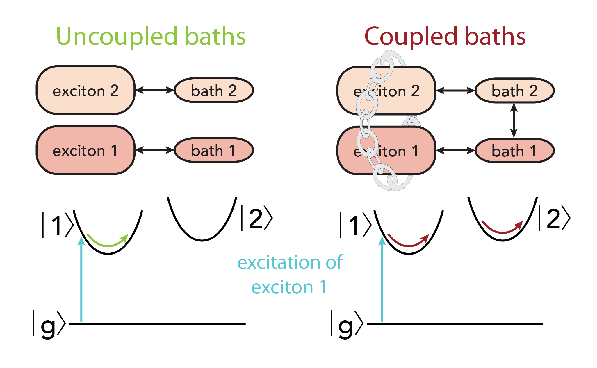

RESEARCH
@NRL
How to optimize chemical environments to promote long-lived quantum processes and energy transport.
- Prolonging quantum coherence by inducing correlated environmental perturbations
- Deducing feature importance of energy transfer data sets using machine-learning algorithms
- Modeling energy transfer in systems that use DNA nanotechnology
Quantum coherence is studied in many different quantum substrates, with different associated coherence lifetimes. Molecular substrates have very fast dephasing compared to other types, such as nuclear spins or nitrogen vacancies in diamond lattices. Despite this deficiency, it would be beneficial for technological speed, footprint, and scalability if molecular systems could be used for applications that require long-lived quantum coherences. Furthermore, these substrates are all open quantum systems with similar dephasing mechanisms, namely the perturbations from their respective environments. Therefore, if principles can be deduced to optimize dephasing in molecular systems, in principle they could also be applied to these other systems. Molecular systems have the additional advantage of tunability, potentially in a high-throughput mode, which makes them a good model system.
In this project, I am using DNA as a scaffold to prepare networks of chromophores with well-controlled intermolecular distances. My goal is to engineer not only the chromophore coupling, but more importantly the coupling among their perturbative environments. If environment-environment coupling can be induced, then these environmental motions may synchronize, as described by the Kuramoto model. This synchronization, even of environmental vibrational modes with distinct natural frequencies, may correlate the perturbations of the electronic states and prolong the dephasing time of the associated excitonic coherences.
Biology uses chromophore antennas to collect energy from light and funnel it toward regions where it may be extracted. This energy transfer largely occurs by Förster Resonance Energy Transfer, which depends on the distance and orientations of the energy relay’s constituent chromophores. While these parameters can be controlled in their protein environments, it is a challenge to control them in artificial systems.
We have synthesized a large library of chromophore networks embedded on DNA scaffolds, and obtained steady-state fluorescence spectra for each sample. While we know the chromophore positions, we do not know which sites are most important for energy transfer, or which sites may represent traps that reduce energy transfer efficiency. Unfortunately, the data set is too large and depends on too many parameters to understand by human inspection alone. I have used machine-learning algorithms to train a predictive model based on this data. Using this model, I have determined the feature importance for each chromophore along the relay.
DNA scaffolds offer Angstrom-scale accuracy for the positions of attached chromophores. They can be brought very close to each other, such that their electronic states mix. In these cases, it is difficult to deduce the energy or rate information from the absorption and fluorescence spectra alone, because energy transfer processes occur among mixed donor and acceptor states. I am implementing the generalized FRET model originally published by Scholes, Jordanides, and Fleming (JPC B 2001, 105, 1640-51) in order to clarify the electronic processes occurring in our decorated DNA scaffolds.
@Uchicago
How collective behaviors interface with quantum processes
- Protected quantum coherences
- Decongesting congested spectra
- Transcribing new information: Coherent excitations across the spatial dimensions
Quantum coherences can appear when superpositions of excitons are coherently excited. They dephase from interactions with their respective environments, which is why quantum coherences are usually exploited (a) at low temperature and/or (b) isolated from their environments. However, sometimes systems exhibit slower dephasing than expected, even in physiological environments.
If the nuclear motions perturbing the quantum states are correlated to each other, then the dephasing can be slowed. I study whether photosynthesis employs this strategy.
Using 2D electronic spectroscopy, I observe the time-ordered vibrational motion occurring on distinct excitons in the Fenna-Matthews-Olson (FMO) pigment-protein complex in different time periods. By allowing one exciton’s spectral motion to propagate, and then checking a distinct exciton’s spectral motion at a later time, I can detect if the unoccupied exciton’s associated nuclear bath has propagated while an entirely different exciton was excited.
There are plenty of reasons to want to find a small peak hidden in a congested optical spectrum.
The congestion often arises because electronic states are pinned onto their nuclear scaffolds. When a coherent state is on a jittering scaffold, it dissipates quantum information. Fast dissipation causes dynamic inhomogeneous broadening, while slower dissipation causes homogeneous broadening. Even 2D spectroscopy, which is supposed to be good at distinguishing spectral features, suffers from this effect.
By eliminating the fast component in the time domain, the spectra become much better resolved. This technique works on experimental and calculated (HEOM) 2D spectra.
Like matter, light has a quantized orbital angular momentum. This degree of freedom promises Tbit/s optical multiplexing, denser qubits, improved quantum communication, and more.
However, this "twisted" light is currently read using impractical and expensive optical techniques. Taking a cue from conventional optical detectors, it would be better to use a solid state medium to read out the orbital angular momentum of the light.
We have found unique spectra and dynamics depending on the orbital angular momentum encoded into otherwise identical light. This effect arises from the unique current density patterns generated by light whose wavefronts are helical rather than planar, generating excitations with coherent spatial patterns that encode the quantum information. These results invite new basic science. For example, exploring the creation of magnetic fields by the light, as it stirs a transverse current density of the sample much like a current traveling through a circular wire.
@Northwestern
How structure impacts function in heterogeneous organic photovoltaic materials
- Defrayed exciton dissociation increases power conversion efficiencies
- Self-assembly by overriding intermolecular interactions
About ten years ago, heterogeneous polymers began breaking records in power conversion efficiencies set by homopolymers such as P3HT, but it was not immediately clear why. Traditional benchmarks such as the film crystallinity often looked worse in these heteropolymers and, contrary to expectation, processes like annealing often made them perform worse. Even their redder absorption spectra could not fully explain their higher efficiencies.
Using transient spectroscopy, I studied the intradonor events occuring before charge transfer within the bulk heterojunction films. Organic photovoltaics traditionally rely on donor-acceptor interfaces to drive exciton dissociation. The associated energy cost is taxed from every dissociation event, passing a substantial penalty onto the power conversion efficiency. We found that the dissimilar monomer units along the polymer backbone partially defrayed the cost of exciton dissociation by preparing charge transfer states within the polymer.
Furthermore, the extent of this charge transfer state formation within the solvated polymers directly correlated to the power conversion efficiencies obtained from the intact bulk heterojunction device. This was an unexpected result, as it does not consider the aggregation characteristics or time-domain mesoscale dynamics that are traditionally mainly associated with device efficiencies.
Aggregation characteristics are often very important in organic photovoltaics, because they determine exciton dissociation efficiencies, as well as free charge carrier mobilities and collection probabilities. Notoriously, it is difficult to get the same device parameters from one bulk heterojunction device to the next, in large part due to variations in the aggregation characteristics even under the same fabrication conditions. Methodologies to address this problem can include expensive annealing, vapor deposition, and related processes in order to tune or repair the aggregation characteristics.
Spontaneous self-assembly is a promising response to these challenges. It happens "for free," ie. without processing steps, and can produce highly regular aggregates. Using X-ray diffraction and atomic force microscopy, we found that certain thiophene-derived oligomers can spontaneously form long, crystalline ribbons in their thin films. This effect occurs because the distinct sides of the oligomer have unique electrostatic effects, which variably dominate under distinct backbone length scales. By achieving a balance, regular order can be achieved across long distances.